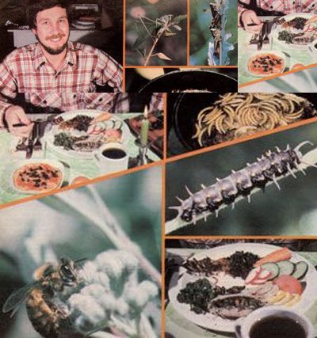

Once you get past the dietary prejudices brought about by the cultural conditioning that most all of us have undergone, you may well discover that insects can do a lot to add flavor and nutrition to your meals. They're an astonishingly good protein source, and are free for the finding . . . often right in your own back yard. Best of all-whether the crawlers and fliers are eaten raw, boiled, fried, or ground into powder-a number of varieties are tasty enough to seduce the most discriminating palate!
There are, of course, times when people eat bugs unintentionally (when something accidentally zooms right into a person's open mouth, for instance), but I first purposely chomped on an insect during a wilderness survival outing in the Sierra Nevada. Our hungry group tore open a rotten log and hit a bonanza ... thousands of damp-wood termites, some of them half an inch long. Since I was a squeamish first-time "bug-biter", I decided to begin by sampling the wood borers' whitish, glistening eggs. But when I bit into one and rolled it around on my tongue, I was disappointed. The taste was very bland. That day, I learned my first lesson in entomophagy, the art of eating insects: If you can't wait to bring the catch back to your table, then by all means carry along some herbs to enhance its flavor!
SO, WHY NOT?
Cave drawings and human coprolites (petrified feces) tell us that our ancestors ate insects as if they were going out of style ... which, at least in Western culinary circles, they are. But in China, South America, Africa and some Polynesian islands, many people still put the protein-packed morsels high on their favorite - foods list. Even many of the North American Indian tribes were "entomophages," as were pioneer farmers ... often, when hordes of grasshoppers cleaned out prairie croplands, the raiders were - in turn - eaten themselves! Furthermore, it's a safe bet that, as the world's protein crisis worsens, we'll all eventually be consumers of these high-energy tidbits.
And why not? The fact is that most insects taste darn good! Many societies think of them as gourmet treats, comparing their flavor to such delicacies as cashew nuts, pineapples, fish, oysters, crab, shrimp and lobster. Actually, the last three - which are premium-priced creatures that make our mouths water and our wallets shrink - are closely related to insects (they're all arthropods), which may account for the above-noted similarity of taste.
HUNGER IN THE MIDST OF PLENTY
Believe it or not, our "conventional" meats are pretty clanged protein-deficient when compared with insects. Chicken, for example, has a protein content of just over 20%-which is higher than that of beef, pork, lamb, or fish-yet some insects contain more than three times that percentage! The ahuatle (an aquatic bug eaten in Mexico) is actually 64% protein, and many spiders (which are arachnids rather than insects) come close to that figure. Therefore, if you were to stuff your mouth once with water bugs or spiders, you'd have to fill it three times with chicken to get the same food value!
Though the time of year during which they're harvested, their stage of development and sometimes even their sex (females are often more nutritious than are males) can account for some variation in the protein content within a particular group of insects, here's how some species stack up:
Termites 20-45%
Grasshoppers 15-60%
Beetles (larvae and adults) 11-30%
Butterflies and moths (larvae and pupae) 8-38%
Bees and ants 7-25%
And the protein that bugs can provide is of high quality, too. Studies indicate that the meat of termites, for instance, contains the same essential amino acids found in animal proteins. Furthermore, insects supply carbohydrates (which other meats are extremely low in), fats, minerals, salts, and vitamins A, B2, niacin, and D. As an example of just how nutritious the little crawlers can be, Turkish women in the Middle Ages ate large quantities of mealworms (the larvae of tenebrionid bee tles) to acquire that plumpness of form which, it's said, drove their men wild.
Actually, the vitamin content of most insects probably isn't enormous, but immature honeybees are one known exception. Uncooked, they supply an astonishing 10,000 I.U. of vitamin A per 100 grams, and 600,000 I.U. of vitamin D per 100 grams. That's twice the U.S. recommended daily allowance for vitamin A, and 1,500 times the RDA for vitamin D. When one considers that vitamin D deficiencies have been linked with fatigue, arthritis, and poor bone and tooth growth, it begins to appear that eating a honeybee daily may be good vitamin "insurance."
And there should be no problem involved in obtaining a regular supply of the "one-a-day" insects. Entomologist Ronald Taylor has calculated that, in extremely cold areas of the United States and Canada, between "600 and 1,500 tons of bees (both immature insects and adults) are deliberately destroyed each year" so that new colonies can be started in the spring. That's the equivalent of some 102 to 225 tons of pure protein. The "worthless" bees could, with only a little processing, be ground into meal, packaged, and sold.
Increasingly, information about entomophagy is finding its way into survival manuals ... and it's a good thing, too! Who knows how many people have starved to death in places literally crawling with energy-packed edibles!
BUT IS INSECT EATING SAFE?
Bugs are nutritious, but you aren't likely to find insect recipes in most popular cookbooks. When the Betty Crockers of the world finally see the light, however, their volumes may well include an insect selection and preparation section to provide the following kinds of information.
[1] Insects spoil fairly quickly after they die, so eat them within several hours of the kill. Otherwise, keep them alive in the refrigerator, where they'll stay fresh for several days. (Never eat any insects found dead.)
There's no need to remove intestines or drain "blood". If you're squeamish about ingesting whatever food the insects themselves have just eaten, place the minilivestock in a small cage (a box with a piece of damp cotton and a cloth cover over the top works well) for 24 hours . . . to allow them to empty out their digestive systems.
In dealing with a large insect (such as a two-inch grasshopper), I pull off and throw away the wings and legs before preparing the bug. Heads and antennae should be considered optional (I usually leave them on). Small insects can be eaten whole, but if you consume a live one such as-for example-a termite "soldier", whose head and claws make up about one-third of its body weight, be sure to remove those portions or crush them with your teeth . . . to prevent your meal from getting in the last bite on its way down the hatch! It's also a good idea to wash just-caught insects in a colander, and pat them dry on paper towels before using them.
[2] Many entomophagists insist that it's necessary to cook insects in order to get rid of any external or internal micro-organisms they might be carrying .. . others feel that such preparation isn't mandatory, and point out that, around the world, insects are often consumed raw. However, I cook them - when possible - in order to be completely safe. (EDITOR'S NOTE: Since there is some question about this point, we recommend that all insects be thoroughly cooked before being eaten.)
[3] As a novice insect taster, you might well wonder about the possible hazards involved in eating species that have poison glands. Adult bees are harmless with the stinger and venom sac left in, and none of the bee preparation books recommends their removal. I've found, however, that bees do have a bitter flavor unless these organs are discarded.
The fact is that most "unfriendly" arachnids and insects are edible. For example, a scorpion can be eaten ... but only after the last segment, bearing the stinger and bulbous poison gland, is cut off. And a renowned eighteenth century French astronomer, Joseph Jerome de Lalande, was known for his love of spiders: He spread them, after they were cooked, on slices of bread.
[4] Don't consume any caterpillars with "fuzzy" bodies. A few such creatures produce an irritation when handled and can cause illness if swallowed. Stick to relatively hairless species that are not feeding on poisonous plants (in fact, an edible plants field guide is necessary whenever you're foraging caterpillars) and are not brightly colored (vivid oranges and reds often serve to warn predators that an insect is badtasting).
[5] Because of the possibility that bugs may be carrying pesticide residues, don't collect them near crops that are heavily sprayed. When you find insects on farms that stick strictly to organic control methods, the six-leggers are not likely to contain any more pesticides than anything else we eat. (Of course, if your back yard is your insect source, you'd better not use any chemical controls there, either.)
[6] If an insect is unfamiliar to you, it's best to be cautious before consuming it. The following testing procedure-suggested by Ronald Taylor in an extremely informative book entitled Butterflies in My Stomach: Insects in Human Nutrition is somewhat similar to the approach that mushroom hunters use:
To start off, be sure the insect is free of any objectionable odors and doesn't produce skin irritation when handled. Next, place a small portion of the bug inside your lower lip for a couple of minutes. It shouldn't taste acid, bitter, or soapy . . . and shouldn't burn the tender skin there. Spit the sample out if it's objectionable in any way. Finally, if the results of the first two tests are acceptable, eat only a small portion. If there are no ill effects within a day or more, you can go on to try progressively larger quantities.
WAITER, THERE'S A BUG IN . . .
The Aztecs preferred corn ears that contained worms over those that were "pestfree", and it's often been said that insects in our food actually make it more nutritious. The fact is that most of us eat bugs every day without knowing it. Our Food and Drug Administration has even set allowances for maximum levels of insects (or their parts) in commercially sold foods ... although-in practice-there are often far fewer bugs present than would be legally allowed, because canning companies set their own, often more stringent, standards.
Of course, in order to produce the nearly insect-free food demanded by society, ever increasing amounts of pesticides must be used. And, as you know, such chemicals can cause environmental contamination ... illnesses in farm workers . . . and dangerous accumulations in consumers' bodies. It's probably better for everyone concerned to learn to accept-or, better yet, prefer-a few insects in our foodstuffs.
A-HUNTING WE WILL GO
You'll likely want to devote your first foraging efforts to bugs that are flavorful and either abundant or of good size. These include (of course, taste is a matter of opinion) grasshoppers, crickets, katydids, grubs, beetles, damp-wood termites, and carpenter ants. Other popular insect treats - which are small or somewhat difficult to catch - are cicadas (all stages), bees and wasps (larvae and pupae), sowbugs, aphids, psyllids, and scale insects.
You must realize that bugs, like most wild foods, have their seasons. Winged termites and ants, for instance, swarm out of their nests in a nuptial frenzy for only a few days each year ... often during a warm, humid spell following a rain in the spring or fall. If you're lucky enough to be around when this happens, you can easily collect a protein-packed meal in a fairly short time, especially if you locate the nests.
An insect net is an invaluable aid to the hopeful bug forager. You can make one of your own, or - for about $7.00 - buy one. The snare can be wielded in either a "shotgun" or a "rifle" approach. The first method involves simply sweeping your net through the grass in the hope that you'll eventually catch some katydids, grasshoppers, or other usable prey. This technique is surprisingly productive, and can also scare up game so you can spot it and use the second method, which involves concentrating on - and, you hope, snagging - a single insect.
Other helpful foraging equipment includes a crowbar (for ripping open rotten logs containing beetles, grubs, ants, or termites) and forceps (for picking insects out of the wood without mashing them). You'll also need some containers-plastic bags, coffee cans, glass jars, or what have you-to put the catch in.
Grasshoppers can be among the most rewarding insects to hunt, because they're big (up to 2-1/2 inches long) and frequently occur in large numbers. (Some "locust" plagues, right here in the United States, have numbered over 100 billion individual hoppers!) Native American tribes in the
West harvested these insects in bulk and ground them into powder for winter use. There were also round-up barbecues in which the Indians formed a huge circle and drove their prey toward the center by beating the grass with branches. Next, they set fire to the weeds in a carefully prepared ring around the trapped bugs. The flames forced the massed grasshoppers to the very center of the circle, and there cooked them. They were then simply picked up and eaten ... fresh-roasted! You can herd the hoppers in the same way, but instead of burning the grass (which could be hazardous), just catch the cornered bugs in your net.
Aquatic insects can be collected by placing a net or screen in swift-moving water and then turning over rocks upstream. The trap will catch the water bugs as they try to swim to safety.
You could, of course, also raise your own insects ... purchase them canned or bagged in specialty stores ... or buy them fresh from biological supply houses, pet stores, or even companies that sell praying mantises and other natural garden protectors. Such methods, however, take much of the pleasure out of entomophagy, because part of the thrill of the sport is knowing that you can obtain food almost anytime you feel like it, and do so free of charge.
FRY, BOIL, OR GRIND THEM
Cooking insects can be almost as much fun as catching them. As a rule, I prepare my dishes right in front of guests and/or the family, because the delicate morsels really do look and smell great.
One tried and true way to cook grasshoppers (or most other insects) is to fry them in butter-with salt, pepper, and chopped parsley-and then sprinkle them with vinegar. Hoppers can also be dried in the oven, at 200 to 300°F, for about one hour . . . or until they're crispy. Either way, when you bite into one, it'll be as noisy as your favorite potato chip, and more nutritious!
The fact is that insects are so versatile that you can prepare them in any number of ways. They can be stir-fried with vegetables and spices . . . fried in an egg batter ... baked in a meat pie ... stewed ... tossed into salad or on a pizza . . . spread on toast . . . or added to a dull can of soup. You can build an entire menu around the six-leggers or simply use them as a side dish, supplement, or appetizer. Recipes for insect souffles and the like can be found in the book Entertaining With Insects: The Original Guide to insect Cookery by Ronald Taylor and Barbara Carter.
If you harvest a bumper crop of bugs, consider grinding them into a powder or paste. Insect "flour" preserves well in the freezer . . . and can be used on a cold winter's day to add protein to a bowl of rice.
Whatever way you prefer to prepare an insect meal, don't wait until you're on a wilderness outing, or in desperate straits, to sample this tasty food. Instead, startright now-to get acquainted with what has to be about the most readily available source of free protein around. Who knows, once you take your family on its first insect-foraging expedition, they just might become enthusiastic entomophagists . . . and "bug" you to do it again!
|
 Photos By The Author Flaavorful, cost-free, fun-to-forage insects can be a versatile protein-vitamin-rich addition to many a mouthwatering gourmet meal. |
|
|